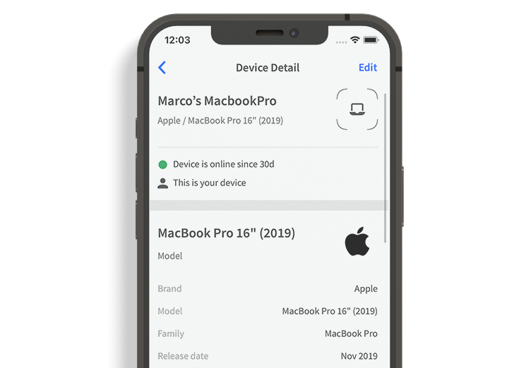
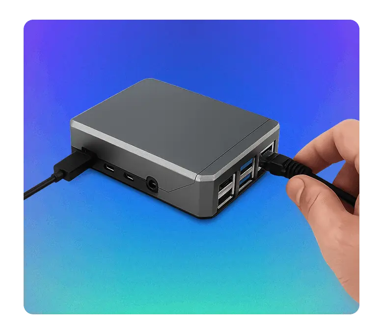

Fing 上手三天，终于知道谁在偷我家 Wi-Fi 的带宽
装 Fing 之前总觉得 Wi-Fi 慢是运营商的锅，扫完才发现设备比预想的多了一倍。分享这几天用下来最有感觉的几个功能和踩过的小坑。
说实话，我之前对"网络扫描"这类工具一直有点戒备——总觉得那是黑客才用的东西，普通人碰不着。直到上个月搬了新家，电信给的 500M 光纤测速总是在 200M 附近晃悠，报修了两次都说"线路正常"。
朋友丢了个 Fing 的名字过来，说去Fing官网装一个扫扫看。反正免费，抱着试试看的心态我从官方下载装上了，结果第一天就扫出了一堆我根本不知道是什么的设备。
第一眼界面：扫完我家有 17 台设备
打开 App、连上家 Wi-Fi、点一下扫描按钮——整个过程不到三十秒。扫描结果出来的时候我愣了一下：屏幕上整整齐齐列了 17 台设备，每台都有名字、IP、MAC 地址，还标了"首次见"。
我家平时常住的也就三口人，手机三台、电脑两台、电视一台、路由器一台，撑死了 8 台。多出来那 9 台是怎么回事？
翻了一圈，倒是也不全是入侵者——有台扫地机器人是上周刚连的，Fing 识别出来标了个 Unknown；还有台华为手表是我妈昨天才到手的，第一次联网。但有三四个设备确实让我犯了嘀咕：MAC 前缀查不到认识的品牌，类型也显示 Unknown，而且持续在线但从不跟我家任何设备通信。
说实话那一瞬间有点慌，但 Fing 给的信息足够让我自己排查了——点开设备详情页，能看到开放的端口、上次在线时间、甚至还有设备的厂商数据库匹配度。挨个看下来，那几个可疑的最后证实是邻居家的智能音箱，信号穿墙穿进来的，没真蹭网。但如果换一个场景，真有个陌生人连进来，我绝对能第一时间认出来。

真正好用的不是扫描，是那两个诊断工具
扫完一遍之后我就把 App 扔一边了，直到有天晚上远程办公突然卡成 PPT，才又把 Fing 掏出来。这一掏才发现——也是去Fing文档翻了一下才搞清楚——最实用的功能其实不是设备发现，而是 Ping 和 Traceroute。
之前网速慢我只会跑个测速，但测速只告诉我"你现在带宽多少"，不告诉我"为什么这么慢"。Ping 不一样——它能告诉你哪一段出问题了。我在设备详情页点了一下 Ping，先测路由器，响应 3ms，没问题；然后 Traceroute 到腾讯云的服务器，前几跳延迟都正常，到第七跳的时候突然飙到 300ms 以上。
我把这个结果发给了运营商的客服，之前两次客服都说"线路正常"，这次直接给我派了个师傅上门查光猫——果然是光猫的光信号衰减超了阈值，换了个光模块，网速当天就回到了 480M 以上。
Traceroute 对我来说最有价值的地方就是把"网络慢"这个模糊的抱怨拆解成了"你家路由器 → 你家光猫 → 运营商节点 → 出网路由 → 目标服务器"这五段，哪段慢一目了然，再也不用跟客服扯皮谁的锅。
免费版到底够不够用
这是我最纠结的一点——毕竟 Fing 的 Premium 订阅不便宜，我用免费版到底能不能解决实际问题？
用了一周下来，答案是：够绝大多数日常场景了。免费版每天能扫 3 次，手动测速、Ping/Traceroute、端口扫描这些核心功能全开放，设备识别虽然是基础版算法但对家用场景来说误差不大。真正锁在 Premium 后面的东西是自动拉黑、定时断网、隐藏摄像头探测这些进阶功能。
我个人的使用节奏大概是：搬新家或者换路由器的时候扫一次确认设备；网速异常的时候 Ping 一下定位问题；平时偶尔跑个测速看看运营商有没有偷偷降速。这些全在免费版的覆盖范围内。
有个小提醒：免费账号一定要注册。不注册的话，设备识别算法是更基础的版本，而且跨设备数据不同步。我一开始懒得注册，后来在 Desktop 上又装了一份 Fing，发现手机上标记好的设备在电脑上全是 Unknown，才回去补了注册——用邮箱注册就行，验证一下完事，Google 或者 Apple 登录也支持。

踩过的几个小坑
说点不好的地方。Fing App 上的 Ping 是简化版，一次只发几个包，对于间歇性抖动的问题抓不准，Desktop 版本才支持连续 Ping 和完整 Traceroute。我试过在酒店里用 App 扫网络，发现设备列表里混了不少别人的，这正常，但那个场景下我确实也没法真的去处理什么。
还有就是 Premium 订阅的宣传文案有点容易让人误解——页面上到处都是"智能拦截""24 小时监控"，看起来好像很强大，但仔细看才发现需要额外买 Agent 硬件或者自己拿树莓派当看门狗，不是光买订阅就能实现的。这点我觉得他们写得有点绕。
最后说谁适合装
如果你也跟我一样，总觉得网速莫名其妙地慢、家里 Wi-Fi 连了多少设备心里没数、想知道到底是谁在占带宽——装一个，免费版就行，十五分钟就能搞清楚自己家网络的基本盘。
但如果你只是想跑个测速、看看带宽够不够，那 Fing 可能有点重了，找个测速网站就够。真要用到自动拦截、隐藏摄像头探测这些 Premium 功能的，大概率已经是折腾党了，这种场景下 Fing 的价值会大很多。
我现在每天睡前都会习惯性地扫一下——不是怕蹭网，是看着自己家那 8 台设备整整齐齐列在那里，有一种莫名的踏实感。如果你也想试试，整套资料同步放在 GitHub、Gitee、GitCode 三个仓库，国内访问哪个顺手用哪个。